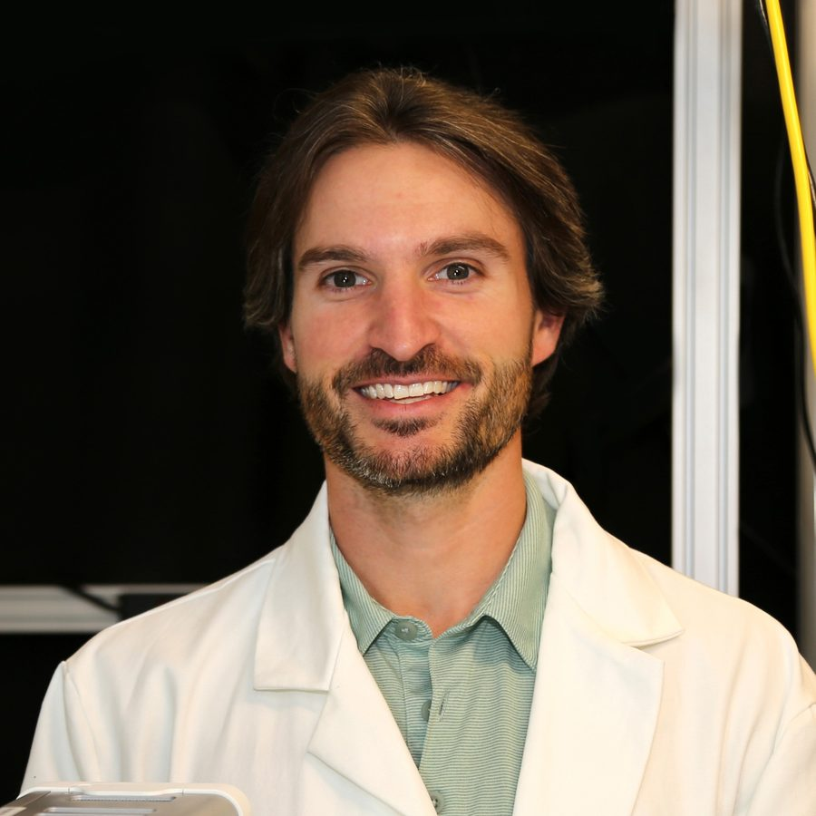

Team
The Gabbard Lab is a team effort. We are driven by scientific curiosity, grounded in mutual respect, and made stronger by our diverse perspectives.

Chase T. Gabbard
Principal Investigator
Incoming Assistant Professor
George W. Woodruff School of Mechanical Engineering
Georgia Institute of Technology
My research centers on fluid mechanics and soft matter, with particular interests in interfacial dynamics, multiphase transport phenomena, and complex fluids.
I earned my B.S. in Mechanical Engineering from Clemson University in 2018 and remained at Clemson for graduate study, completing both my M.S. (2020) and Ph.D. (2024) under the mentorship of Dr. Joshua Bostwick. My doctoral work explored a range of fluid phenomena and culminated in the dissertation Capillary Phenomena in Flow Down Fibers: Beads, Bridges, Sheets, and Threads. Alongside my research, I served as Chair of the Mechanical Engineering Graduate Student Council, co-hosted the Graduate Research Seminar, and mentored incoming students through the CECAS Peer Mentoring Program.
Following my PhD, I joined the Center for Fluid Mechanics at Brown University as a Hope Street Postdoctoral Fellow, working with Dr. Daniel Harris. My current projects investigate drop-substrate interactions and water entry dynamics, focusing on how non-wetting, deformable, or actively deformed substrates influence these phenomena, as well as how ambient gas conditions affect air-film-mediated processes like drop rebound.
I am eager to explore opportunities to collaborate. If you’re interested in working together, feel free to reach out: chase.gabbard@me.gatech.edu.
Lab members
Profiles of lab members will appear here as the team grows. Want to be one of them?
See open positions